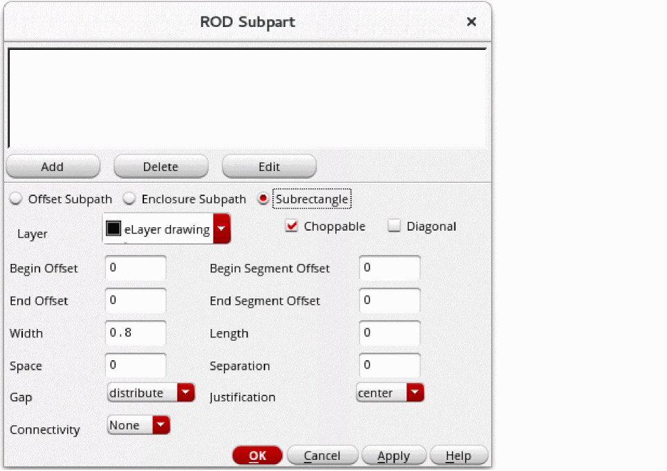
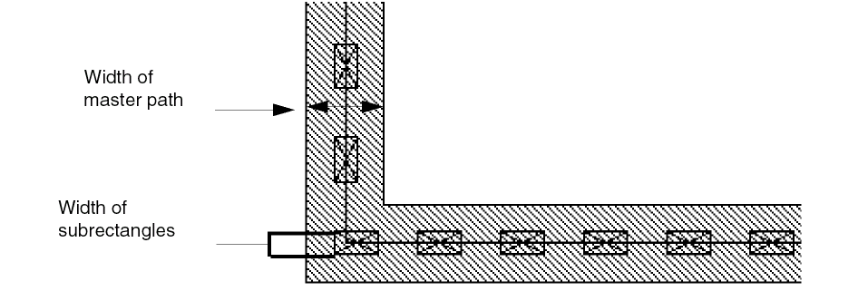
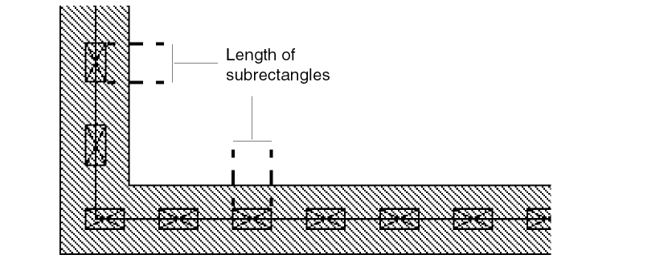

Adding a Set of Subrectangles Subpart
To add one or more sets of subrectangle subparts to the master path while creating a multipart path (MPP):
-
In the Create Multipart Path form, click the Subpart button.
The ROD Subpart form appears. -
Choose Subrectangle.
 - For Layer, choose the layer for the set of subrectangles.
- Select Choppable if the master path is set to choppable; otherwise, set the subrectangles to choppable or not choppable, as desired.
- Select Diagonal if you want to create subrectangles on 45-degree path segments. This option works only when all subrectangles on the path are square.
- For Begin Offset, type a signed integer or floating-point number to start the first subrectangle before or after the starting edge of the master path.
- For End Offset, type a signed integer or floating-point number to end the last subrectangle before or after the ending edge of the master path.
-
If you want to keep subrectangles out of the corners of segments, assign positive numbers for the Begin Segment Offset and End Segment Offset. Ensure you have read the concepts described in Sets of Subrectangles.
For an MPP, the width of a subrectangle is parallel to the width of the master path.
The length of a subrectangle is parallel to the master path centerline.
 -
For Width, type a positive integer or floating-point number. Retain the default value if you want to use the
minWidthrule for the subrectangle layer from the technology file. -
For Length, type in a positive integer or floating-point number. To let the length default to the
minWidthrule for the subrectangle layer from the technology file, do not change the Length field.
For each segment, you control the space between rectangles and after the last rectangle with the two fields Gap and Space. Space determines the minimum distance between rectangles. Gap controls where the system places any space that remains after the rectangles are placed the minimum distance apart. -
For Space, type a positive integer or floating-point number for the distance between the edges of adjoining rectangles. To use the
minSpacingrule for the subrectangle layer from the technology file, keep the default. - For Gap, choose distribute or minimum.
-
Type a signed integer or floating-point number for Separation, and choose a setting for Justification. Whether you enter a positive or negative number depends on where you want to define the set of subrectangles in relation to the master path.
When you specify that a set of subrectangles is a pin, each rectangle in the set becomes a pin. In the layout editor, the whole multipart path (master path plus all subparts) is treated as a single object. -
For Connectivity, do one of the following:
- If you do not want to define connectivity, leave Connectivity set to None.
- If you want to associate the subpart with a net or specify it as a pin, see Defining Connectivity for a Subpart.
-
To add the new subrectangle to the box at the top of the ROD Subpart form, click Add.
The system displays a line of data for the new set of subrectangles in the box. -
To save the new set of subrectangles as part of the MPP in the cellview, click OK or Apply.
You must click OK or Apply in the ROD Subpart form to make the new set of subrectangles part of the MPP.
You have defined a set of subrectangles only for the MPP in the current layout window. If you want to add the new set of subrectangles to an MPP template, you need to save your changes to a template.
You can also use the shortcut menu in the Property Editor assistant to add a subrectangle to MPP.
For information about the overall steps involved in creating an MPP, see Flow for Creating Multipart Paths.
Related Topics
Return to top